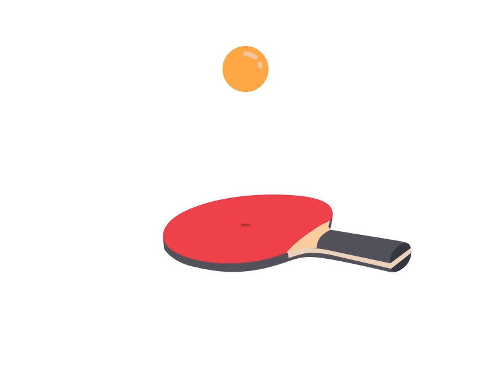

Blog de Stage D'Erwan MENARD
Bienvenue sur mon blog !
J'ai effectué un Service Civique au sein d'une association de Tennis de
Table.
Dans ce cadre, j'ai eu l'occasion de travailler sur diverses missions liées à l'informatique.
J'ai participé à la mise à jour du site internet de mon club pour renforcer sa visibilité
en ligne et améliorer la communication avec ses membres.
En parallèle, je me suis engagé dans la création d'un logiciel pour faciliter la gestion des équipes
en compétition apportant, ainsi, un soutien technique crucial à l'organisation des évènements
sportifs.
Ce blog est l'espace de partage de mon expérience, de mes compétences acquises ainsi que les challenges rencontrés au fil de cette aventure enrichissante.
